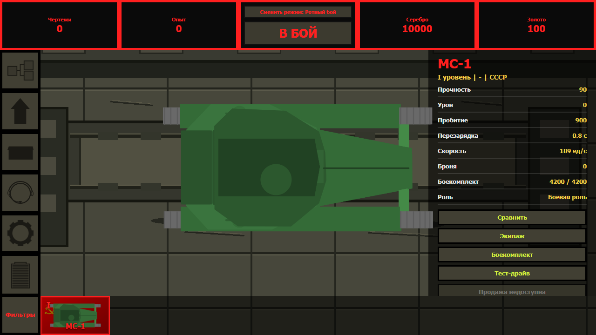

Tanks Wars
Танковая тактическая игра с ангаром, развитием техники, событиями и боями.

Описание
Tanks Wars - игра про танки, где основной экран связан с ангаром, техникой и боями. Можно выбрать машину, посмотреть характеристики и перейти в бой.
Что внутри
Ангар
Выбор танка и просмотр параметров.
Улучшения
Открытие техники и настройка машины.
Бой
Отдельный экран для сражения.
Как запустить
- Выбрать площадку: сайт, Яндекс Игры, Scratch или APK.
- Дождаться загрузки игры.
- Выбрать танк в ангаре и начать бой.